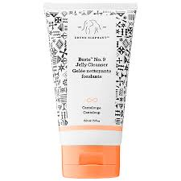

Step 1: Remove Makeup
I use the Neutrogena cleansing wipe to get off my mascara and the majority of my makeup.
Alternative face wipes you can use:
Step 2: Cleanse
I use Drunk Elephant Beste No. 9 Jelly Cleanser to get rid of all of the excess makeup residue that the makeup wipe did not remove (which is a lot). Cleansing before bedtime is a MUST.
Alternative cleansers you can use:

Step 3: Tone
After cleansing, I use Ren's Ready Steady Glow Daily AHA Toner to help exfoliate my skin and make it "glow."
Alternative toners you can use:
Step 4: Retinol
Once I've used the toner, I put a pea-size amount of Drunk Elephant's A-Passioni Retinol Cream on the back of my hand.
Alternative retinol creams you can use:
Step 5: Night Serum
While the retinol is still on the back of my hand, I use a pea-size amount of Drunk Elephant's T.L.C. Framboos Glycolic Resurfacing Night Serum and mix the two products together using my finger. Then, I rub the mixture all over my face and neck.
Alternative night serums you can use:
Step 6: Eye Cream
Lastly, I take a half-pea-size amount of Drunk Elephant's C-Tango Multivitamin Eye Cream and with my ring finger lightly rub below and around my eye area.
Alternative eye creams you can use: